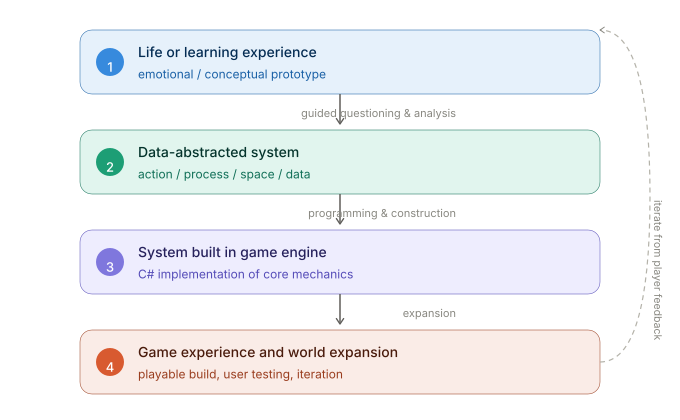

上海纽约大学 · 互动媒体艺术NYU Shanghai · Interactive Media Arts
把生活与知识，变成可玩的游戏系统Turn Life & Knowledge into Playable Game Systems
一门以「来自生活的游戏设计」四步法为主轴的课程：用 AI 做设计伙伴、编程助手与资产工厂，从真实感受出发，做出能玩的、能拓展的游戏。A course built on the four-step "from experience to game" method: use AI as design partner, programming assistant, and asset factory to turn real feeling into playable, expandable games.
方法论主轴The Method
四步法：从感受到可玩系统The Four-Step Method
四个项目都贯穿同一条思维链——方法贯通，但每个游戏是独立作品。Every project follows the same chain of thinking — the method is shared, but each game is a standalone piece.

① 感受 → ② 数据化系统 → ③ 引擎搭建 → ④ 体验拓展，再从玩家反馈迭代① Experience → ② Data-abstracted system → ③ Engine build → ④ Experience expansion, iterating from player feedback
一个生活 / 学习感受A life / learning experience
情感或概念原型：从你真正关心、真正理解的内容出发。An emotional or conceptual prototype: start from something you genuinely care about and understand.
数据化的抽象系统A data-abstracted system
拆成动作 / 过程 / 空间 / 数据四个维度，形成可设计的系统。Break it into action / process / space / data — a designable system.
引擎里的系统搭建A system in the engine
用团结引擎 + C# 把核心玩法实现出来。Implement the core mechanics in Tuanjie Engine with C#.
游戏体验与世界观拓展Experience & world expansion
从试玩反馈迭代，把系统拓展成更完整的游戏世界。Iterate from playtests and expand the system into a fuller game world.
14 次课 · 三个独立项目14 Classes · Three Mini-Projects
课程路径The Course Journey
Game One · 游戏框架（C1–C3）Game One · Game Framework (C1–C3)
引导式问答把领域知识变成可玩原型——不写代码，专注设计思维。采用暑期课程流程。Guided questioning turns domain knowledge into a playable prototype — no coding, pure design thinking. Uses the summer-intensive flow.
Game Two · 游戏世界（C4–C7）Game Two · Game World (C4–C7)
在团结引擎中用 C# 把情感原型搭成可玩的单人体验；以 WebGL 在浏览器试玩。Build the emotional prototype into a playable single-player world in Tuanjie Engine with C#; playtest as WebGL in the browser.
Game Three · 多人游戏（C8–C11）Game Three · Multiplayer (C8–C11)
从 Board Club 考察出发，用物理原型验证多人规则，再在引擎里做可联机的数字游戏。From a Board Club field trip, validate multiplayer rules with a physical prototype, then build a networked digital game.
Finals · 优化与展示（C12–C14）Finals · Optimize & Showcase (C12–C14)
优化发布（WebGL + 可选微信体验版），期末展示与 AI 协作反思。Optimize and release (WebGL + optional WeChat experience build), final showcase and AI-collaboration reflection.
课前准备Before Class
你需要准备什么What You Need
团结引擎Tuanjie Engine
中国本地化引擎（基于 Unity 2022 LTS）。安装时勾选 WebGL Build Support 与 Mini Game Build Support。The China-localized engine (Unity 2022 LTS). Install with WebGL Build Support and Mini Game Build Support.
AI 工具（自选）AI tools (your choice)
设计：ChatGPT / Claude；编程：Copilot / Cursor；美术：MidJourney / Stable Diffusion；音频：Stable Audio / Suno。Design: ChatGPT / Claude; coding: Copilot / Cursor; art: MidJourney / Stable Diffusion; audio: Stable Audio / Suno.
前置知识Prerequisites
任意一门编程语言的基础；C# 会在引擎内从零教起。无需游戏经验。Basics of any programming language; C# is taught from scratch inside the engine. No game experience required.
成果与评估Outcomes & Grading
你将在结课时拥有什么What You'll Have by the End
三个递进的独立游戏原型 + 一份四步法设计思维。评分：参与 10% · 三个 Mini-Project 40% · 文档 20% · 阅读/试玩反馈 10% · 期末项目 20%。Three standalone game prototypes of increasing depth + a four-step design mindset. Grading: participation 10% · three mini-projects 40% · documentation 20% · reading/play response 10% · final project 20%.